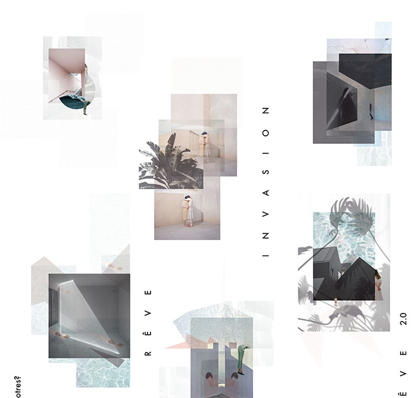
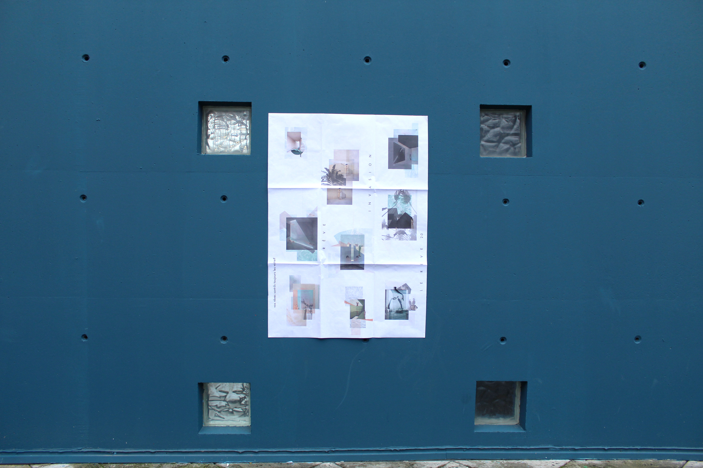
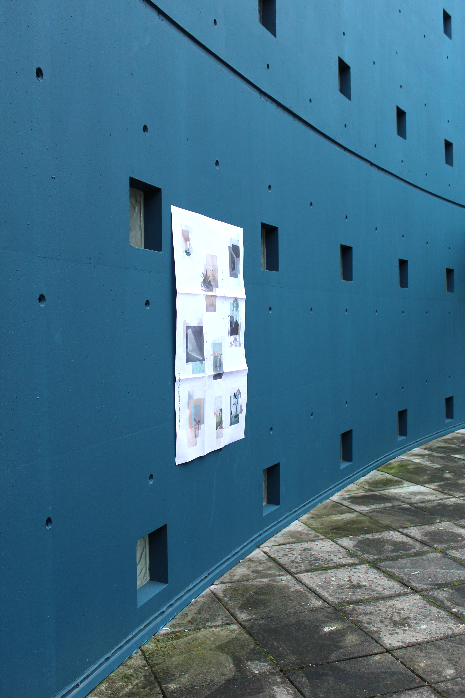
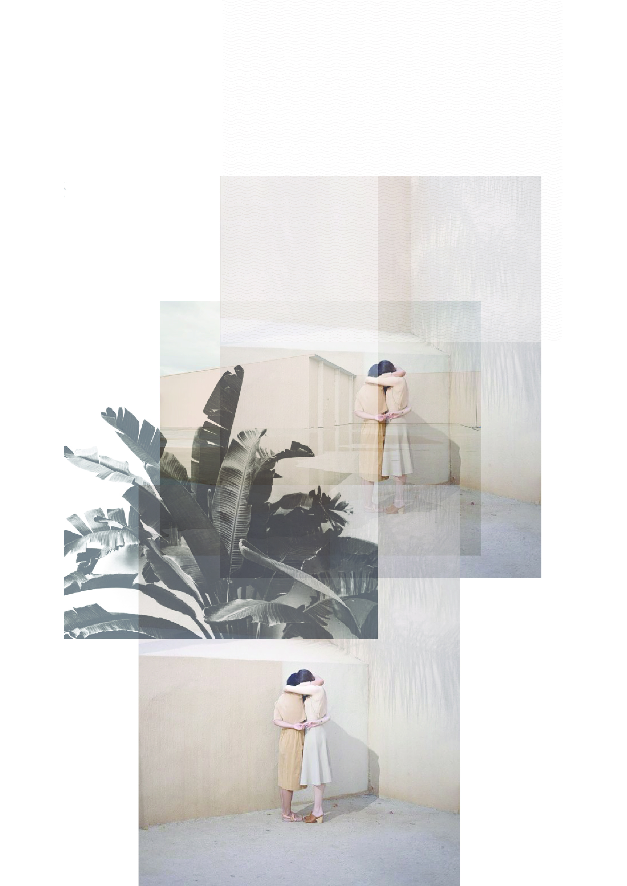
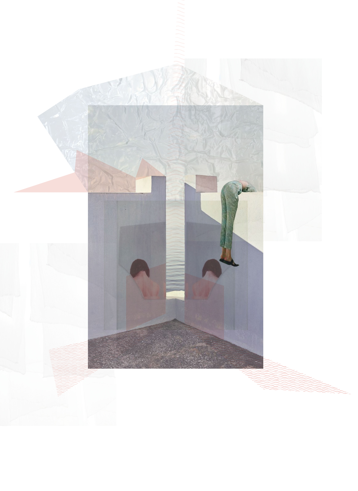
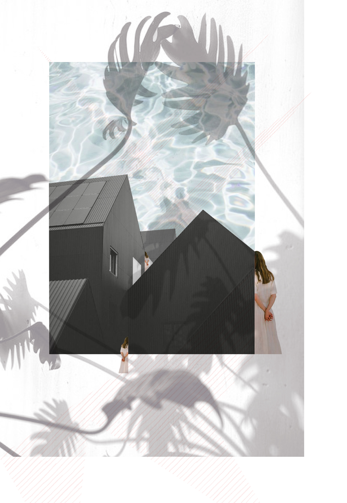
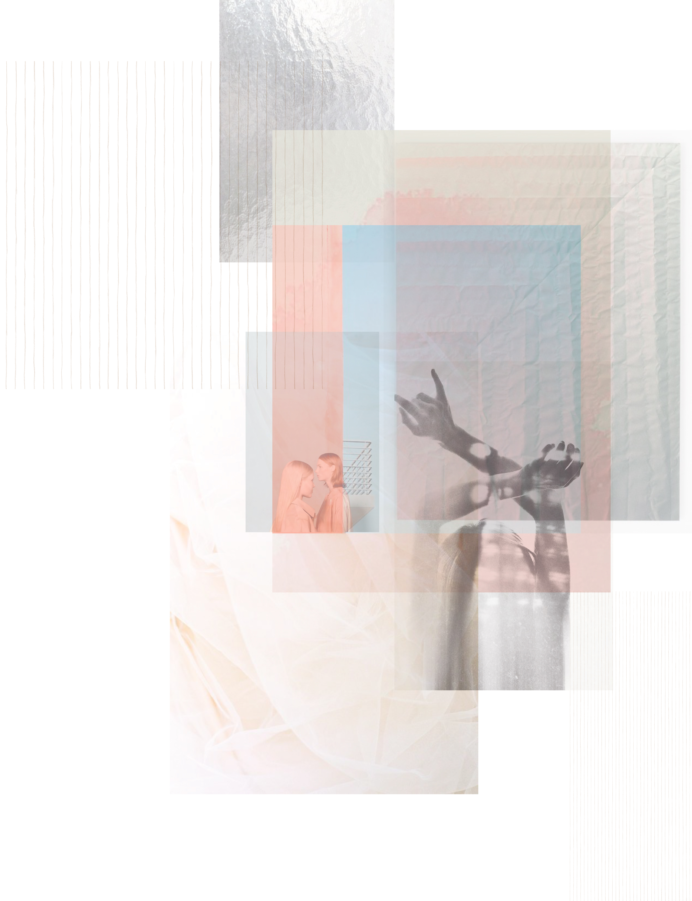
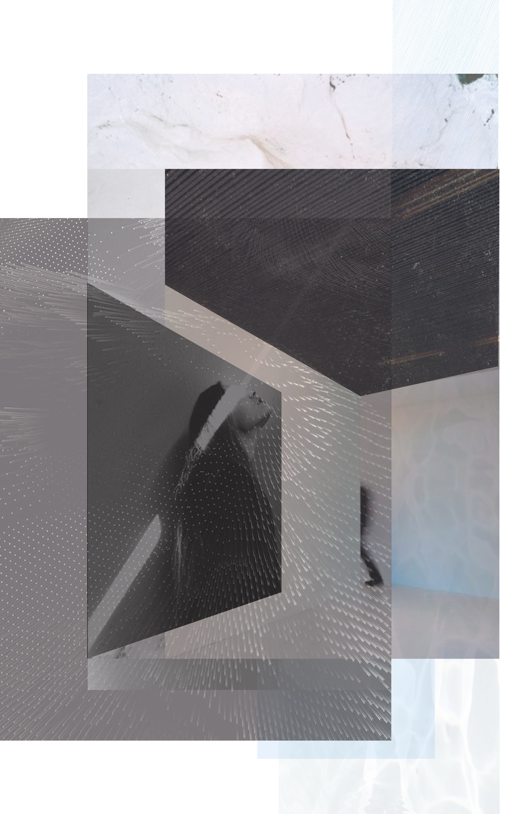
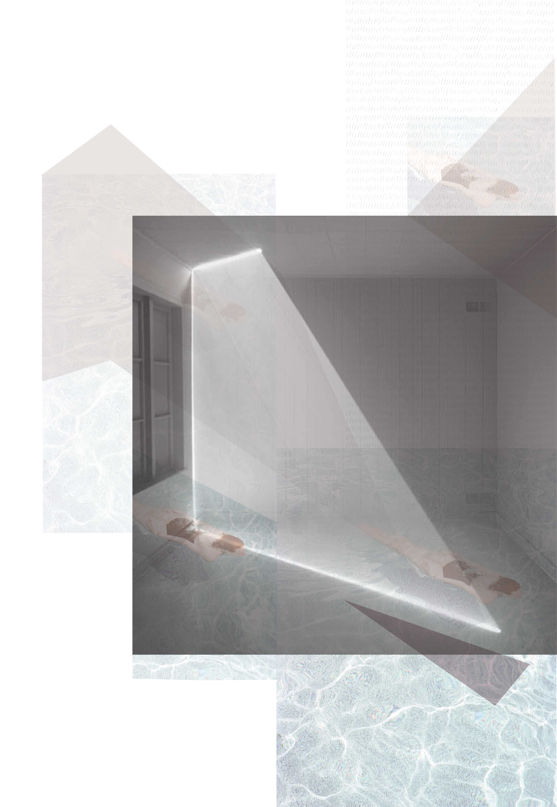

Le rêve 2.0—Les dystopies de la communication
Format 90 x 140
Imprimé au traceur
Toulouse—Février 2017
Un projet qui questionne les dystopies de la communication et nourrit par une conférence du même nom qui s’est déroulée
à l’Université Jean Jaurès—Toulouse. C’est l’idée que d’ici 30 ans, nous serons tous fichés, répertoriés par le biais nos smarts-phones,
ordinateurs, mails, factures, appels téléphoniques, réseaux, profession, compte en banque ainsi que par tous les moyens possibles
et imaginables. Ceux qui s’excluraient de ce système seraient alors considérés comme des dangers et des perturbateurs potentiels
de cette société high-tech. Le but de la manoeuvre sera de contrôler au maximum les individus afin de faire respecter les règles.
Cette procédure retirera toute intimité aux citoyens. Les seuls instants à l’abri des regards seront les rêves. Mais au vu de toutes
les techniques à la pointe de la technologie déjà mises en place, qu’est-ce qui nous certifie que ses rêves soient bien les nôtres?
Et si nos rêves étaient eux aussi infiltrés sans que nous y aillons prêté attention? Ce projet pousse les limites de l’intimité
jusqu’au rêve qui est censé se former librement dans notre inconscient. Les illustrations ont été construites sur les codes
de représentation du rêve. Codes qui impliquent par exemple une certaine légèreté, une sensation de flou parfois même de confusion,
une succession d’images, un univers issus de la réalité et à la fois complètement rêvé. C’est pour cette raison que les illustrations
sont réalisées à la manière de collages (réalité construite) et qu’elles ne sont pas enfermées dans un cadre. À l’intérieur de chaque
rêve une trame très subtile symbolise l’invasion, les protagonistes dans le doute, la fuient.
à l’Université Jean Jaurès—Toulouse. C’est l’idée que d’ici 30 ans, nous serons tous fichés, répertoriés par le biais nos smarts-phones,
ordinateurs, mails, factures, appels téléphoniques, réseaux, profession, compte en banque ainsi que par tous les moyens possibles
et imaginables. Ceux qui s’excluraient de ce système seraient alors considérés comme des dangers et des perturbateurs potentiels
de cette société high-tech. Le but de la manoeuvre sera de contrôler au maximum les individus afin de faire respecter les règles.
Cette procédure retirera toute intimité aux citoyens. Les seuls instants à l’abri des regards seront les rêves. Mais au vu de toutes
les techniques à la pointe de la technologie déjà mises en place, qu’est-ce qui nous certifie que ses rêves soient bien les nôtres?
Et si nos rêves étaient eux aussi infiltrés sans que nous y aillons prêté attention? Ce projet pousse les limites de l’intimité
jusqu’au rêve qui est censé se former librement dans notre inconscient. Les illustrations ont été construites sur les codes
de représentation du rêve. Codes qui impliquent par exemple une certaine légèreté, une sensation de flou parfois même de confusion,
une succession d’images, un univers issus de la réalité et à la fois complètement rêvé. C’est pour cette raison que les illustrations
sont réalisées à la manière de collages (réalité construite) et qu’elles ne sont pas enfermées dans un cadre. À l’intérieur de chaque
rêve une trame très subtile symbolise l’invasion, les protagonistes dans le doute, la fuient.









